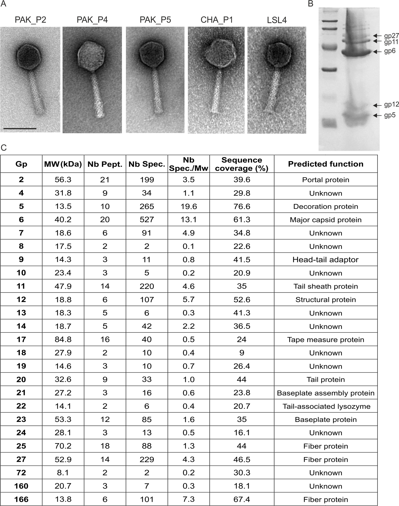

第 2 章
看不见的碳泵
北大西洋的夜晚没有月亮。科考船“努力号”的实验室里，只有仪器指示灯在黑暗中明灭。莉塔·普罗克特盯着透射电子显微镜的荧光屏，已经在屏幕前坐了四个小时。她的样品台上有二十四个铜网，每个

铜网上承载着来自马尾藻海不同深度的海水——经过戊二醛固定、超速离心、醋酸铀负染，理论上应该显示出细菌的清晰轮廓。
但屏幕上呈现的不是预期的景象。那是1989年秋天的事。普罗克特最初以为设备出了问题。她的透射电镜是借来的旧型号，真空系统时常罢工，电子束的稳定性需要手动微调。她反复检查了加速电压、物镜光阑、聚焦参数——一切正常。
她又怀疑是样品制备过程中的污染：固定剂配比不对？离心转速不够？染液过期？她重新制备了一批样品，这次用了更严格的过滤控制和新鲜配制的醋酸铀溶液。
四十八小时后，新样品上机。荧光屏亮起。同样的画面再次出现。密密麻麻的微小颗粒。有些呈正二十面体，棱角分明，像微型晶体；有些带着纤细的尾丝，形如注射器；有些只是模糊的球形暗影。
它们的大小在二十到两百纳米之间，比细菌小一个数量级。而数量——普罗克特做了初步计数——每毫升海水里，这些颗粒的数量是细菌的十倍以上。她当时并不知道，她正在看着地球上最庞大的生物实体。## 一
在那之前，海洋病毒几乎是一个被遗忘的领域。教科书在讲述海洋微生物时会提一句“病毒也存在”，然后迅速翻过。
这不是疏忽，而是技术上的绝境——光学显微镜的极限分辨率约两百纳米，大多数病毒在它面前就是隐形者。培养皿的方法更不适用：病毒只能在活细胞内复制，而海洋细菌中能在实验室培养的不到百分之一。你无法培养宿主，就无法看到病毒。看不到，就等于不存在。
普罗克特的工作之所以成为转折点，不在于她发明了全新的技术，而在于她将几项已有技术组装成了一条可行的路径。核心是样品制备：先用孔径零点二微米的滤膜去除细菌和更大的颗粒，再用超速离心将病毒大小的颗粒沉淀到铜网上——这一步需要精确计算离心力，力太小病毒沉不下来，力太大会把病毒衣壳压碎。
然后是染色。醋酸铀中的铀原子能散射电子，在病毒颗粒周围形成一圈暗色衬度，让原本透明的纳米级颗粒在电子束下显出轮廓。整个流程需要至少两天，每一步都可能失败。
普罗克特的实验记录本上，最初的十几页几乎全是失败的记录：滤膜堵塞、离心管破裂、染液结晶、铜网污染。
直到第二十三批样品，荧光屏上才第一次出现清晰可辨的病毒颗粒。她计数了二十个视野，取平均值，再乘以换算系数。计算器显示的数字让她重新算了一遍。每毫升表层海水：一百亿个病毒颗粒。
这个数字意味着什么？如果你从码头边随手舀起一捧海水——大约一百毫升——你手心里就捧着三千亿个病毒。三千亿是什么概念？银河系大约有两千亿到四千亿颗恒星。一捧海水里的病毒数量，与整个银河系的恒星数量处在同一个量级。而海洋的总体积约十三亿立方公里。全球海洋中的病毒总数，估计达到十的三十次方——一后面跟三十个零。如果把这些病毒首尾相连排成一列，它们的总长度会达到一亿光年，足以从银河系的一端延伸到仙女座星系再折返。
但这些数字仍然只是数字。真正的问题在别处。普罗克特把计数结果与同一样品中的细菌丰度做了比对。数据显示，病毒与细菌的数量比大约维持在十比一。
在表层水体中，这个比值略有波动，但从未低于五比一，有时高达十五比一。这意味着什么？意味着病毒对细菌群落的潜在控制力是压倒性的。十比一不是一个随机的比例——它是捕食者与猎物之间、控制者与被控制者之间的比例。在陆地上，狼与鹿的数量比不会达到十比一。在海洋中，病毒做到了。这就引出了一个无法回避的问题：这些病毒每天在做什么？## 二
要回答这个问题，需要先理解海洋表层在发生什么。太阳光穿透海面，在约两百米深的上层水体中制造出一片光明的区域——真光层。在这里，蓝细菌和浮游植物进行光合作用，把溶解在海水中的二氧化碳固定为有机碳。这个过程每年从大气中吸收约五百亿吨碳，相当于人类活动年排放量的十倍以上。这些有机碳的命运，决定了地球气候系统的走向。
传统的海洋碳循环模型——被称为“生物泵”——是这样描绘碳的旅程的：浮游植物被浮游动物摄食，浮游动物被小鱼吃掉，小鱼被大鱼捕食，每一步都有一部分有机碳通过呼吸作用重新转化为二氧化碳，释放回表层海水和大气。未被消耗的部分，以粪便颗粒、蜕皮和死亡尸体的形式向深海沉降。在这个模型中，食物链是碳向下输送的主要通道。浮游植物是起点，浮游动物是泵，粪便颗粒是载体。
这个模型在二十世纪七十年代基本定型，成为理解海洋碳循环的基石。但它有一个盲区：它几乎没有考虑病毒。
普罗克特的计数数据发表后，海洋生态学家开始面对一个令人不安的事实。
如果每毫升海水里有一百亿个病毒，如果病毒与细菌的数量比是十比一，那么每天必然有大量的细菌被病毒感染和裂解。细菌是海洋微生物环的核心环节——它们分解有机碎屑，回收营养物质，同时也是浮游动物的食物来源。如果病毒大规模裂解细菌，就等于在食物链的基座上凿开了一个巨大的缺口。被裂解的细菌没有被浮游动物摄食，它们体内的碳没有进入食物链向上传递。那么，这些碳去了哪里？
1992年，一组海洋生物地球化学家提出了一个假说。他们注意到，在实验室培养中，被噬菌体裂解的细菌并不是简单地消失——它们的细胞内容物在爆裂瞬间释放到周围水体中，形成一团富含蛋白质、核酸和细胞壁碎片的微型颗粒云雾。这些颗粒的直径通常在零点零五到零点五微米之间，比完整的细菌细胞小，但比溶解态的有机分子大。它们在物理性质上与活细胞有本质区别：更黏稠、更容易相互碰撞聚集、更容易吸附在较大的悬浮颗粒上。这个假说被命名为“病毒分流”（viral shunt）。
它的核心论断是：病毒裂解细菌后释放的有机碎屑，并没有在表层水体中被完全再矿化为二氧化碳，而是有相当一部分通过聚集和沉降，从快速循环的碳库中分流出来，进入了向深海输送的慢速通道。这不是一个细微的修正。如果病毒分流假说成立，那么海洋碳循环的路径就需要重绘。## 三
验证这个假说花了将近十五年。第一个技术难题是如何追踪裂解释放的碳的去向。碳原子不携带天然标记——你无法在显微镜下分辨一个二氧化碳分子是来自病毒裂解还是来自浮游动物的呼吸。
解决方案来自同位素示踪技术。研究人员在实验室中培养蓝细菌，用碳-13标记的碳酸氢盐作为碳源，让光合作用将标记碳固定到细菌细胞中。然后加入噬菌体，引发感染和裂解。裂解后，他们将培养液通过一系列不同孔径的滤膜，测量每一级滤膜截留的碳-13含量。
数据显示，裂解产生的有机碳有大约百分之二十到三十以溶解态存在——这部分碳会迅速被周围的异养细菌吸收，在表层水体中快速周转。但另有百分之十五到二十五以颗粒态存在，粒径集中在零点一微米到一微米之间。这些颗粒的沉降速度虽然缓慢——每天约一到十米——但在持续裂解的驱动下，累积效应是巨大的。
第二个关键证据来自海洋沉积物捕获器。这些装置悬挂在不同深度的海水中，收集自然沉降的颗粒物。
1998年到2004年间，多个航次在太平洋和大西洋的捕获器样品中检测到了病毒衣壳蛋白的特征氨基酸序列。这些序列出现在一千米、两千米甚至四千米深的样品中，与表层水体中主要噬菌体的蛋白序列高度匹配。这意味着病毒裂解产生的颗粒——至少是其中的衣壳碎片——确实到达了深海。
第三个证据链条来自碳同位素比值。海洋沉降颗粒中的有机碳，其碳-13与碳-12的比值携带着来源信息。浮游植物通过光合作用固定碳时，会优先吸收较轻的碳-12，导致有机碳中碳-13相对贫化。而病毒裂解产生的碎屑，其同位素比值与完整浮游植物细胞有细微但可测量的差异——这是因为病毒在复制过程中会优先利用某些氨基酸和核苷酸，产生额外的同位素分馏。深水捕获器样品中的碳同位素比值，与病毒裂解产物的预期值吻合，而与完整浮游植物或浮游动物粪便颗粒的预期值不一致。
这些证据链各自不完整，但合在一起构成了有力的论证。到2005年左右，病毒分流假说已经从边缘走向主流。
海洋碳循环模型开始纳入病毒参数。初步估算表明，如果没有病毒分流，海洋生物泵向深海输送碳的效率将降低约百分之二十到四十。换算成大气二氧化碳浓度——这意味着工业革命前的大气二氧化碳浓度可能比实际高出数十到上百ppm。整个地球的气候系统，将是另一番面貌。
政府间气候变化专门委员会的报告指出，自工业革命以来，大气中二氧化碳浓度已从约280ppm上升至超过380ppm，这主要归因于人类活动。病毒分流机制的存在，意味着在人类开始大规模排放温室气体之前，海洋病毒就已经在默默地调节着地球的碳平衡，为气候系统提供了一个关键的缓冲。这种缓冲作用，与人类活动导致的温室气体排放形成了鲜明对比：前者是数十亿年来持续运转的自然调节机制，后者则是近两百年来急剧加速的人为扰动。
现在让我们从科学家的视角切换到病毒和碳颗粒的视角。因为只有从后一个视角出发，你才能真正理解“病毒分流”作为引擎的含义。
想象你是一颗蓝细菌，漂浮在真光层中。阳光穿过你的类囊体膜，驱动着光合作用的电子传递链。你把溶解的二氧化碳固定为葡萄糖，再用葡萄糖合成蛋白质、核酸和脂质。你生长，你分裂，你的碳原子在细胞内有条不紊地流动。
然后一颗噬菌体吸附在你的细胞壁上，将它的基因组注入你的细胞质。在接下来的几十分钟内，你的代谢系统被劫持，你的碳骨架被拆解重组，用来制造噬菌体的衣壳蛋白和核酸。最后，你的细胞膜破裂。在那一瞬间——大约百万分之一秒——你体内约百分之七十的碳以颗粒态释放到周围海水中。
这些颗粒不是惰性的碎屑。它们表面带有大量带电基团——来自断裂的蛋白质侧链、磷酸基团和脂质头基——使它们比完整的细胞更容易黏附。两颗颗粒碰撞，就可能形成较大的聚集体。聚集体吸附更多颗粒，逐渐变成微米级的絮状物。
絮状物继续碰撞、合并，最终形成肉眼可见的“海洋雪”——一团半透明的、缓慢沉降的有机碎屑云雾。海洋雪的沉降速度取决于粒径和密度。直径零点五毫米的絮状物，每天沉降约五十到一百米。直径一毫米的，每天可沉降数百米。从表层到四千米深的海底，一颗碳颗粒可能需要数周到数月。
在这个过程中，一部分碳会被深水细菌再矿化，释放为二氧化碳重新溶解到海水中——但那已经是数千米深的海水，与大气隔绝，二氧化碳需要数百年到上千年才能通过洋流循环回到表层。另一部分碳直接抵达海底沉积物，被封存在地质时间尺度中。这就是病毒分流的物理过程：病毒裂解→颗粒释放→聚集→沉降→封存。每一步都由病毒的生物特性驱动，每一步都改变了碳循环的路径。
没有病毒，细菌体内的碳会通过食物链向上传递，大部分在表层被呼吸消耗。有了病毒，相当一部分碳被从食物链中“分流”出来，直接进入物理沉降通道。这是引擎，不是背景条件。
2008年，一项研究将病毒分流纳入了全球碳循环模型。研究团队整合了过去二十年的病毒丰度数据、裂解率测定和颗粒沉降通量，试图回答一个问题：如果海洋中突然没有了病毒，大气二氧化碳浓度会怎样变化？模型运行的结果令人不安。
移除病毒后，海洋表层的细菌丰度在数周内激增——没有了病毒的控制，细菌群落不受抑制地增长。但随后，细菌的快速增长耗尽了表层水体中的溶解态营养盐——氮、磷、铁——导致浮游植物的生长受到限制。浮游植物的光合固碳量下降，意味着海洋从大气中吸收二氧化碳的速率降低。病毒分流通道关闭，原本会沉降到深海的碳颗粒不再产生，更多的碳停留在表层循环中，通过呼吸作用重新释放为二氧化碳。
模型的最终输出是：在没有病毒的情况下，大气二氧化碳浓度将在数十年内上升到一个新的平衡点，比实际值高出约百分之三十。全球平均温度将相应上升数摄氏度。海洋酸化加剧。整个行星的气候系统将滑向一个更温暖、更不稳定的状态。
这一模型预测，与政府间气候变化专门委员会关于人类活动导致全球升温的评估形成了有趣的对照：两者都指向一个更温暖的未来，但驱动机制截然不同——一个是自然引擎的停转，另一个是人为排放的加速。
这不是说病毒在“调节”气候——调节意味着某种目的或意图。病毒没有意图。它们只是复制自己，裂解宿主，释放后代。气候效应是数十亿年来数万亿次裂解事件累积的副产品。但正因为这个副产品如此巨大、如此持续、如此深刻地嵌入了地球系统的运转，你病毒是行星气候的隐形引擎。它们不燃烧燃料，不排放废气，它们只是做病毒该做的事——感染、复制、裂解——而碳循环的路径因此被重塑。
2014年，另一个研究团队从沉积记录中找到了病毒引擎运转的化石证据。他们在太平洋深海沉积物岩心中检测到了大量病毒衣壳蛋白的残留，这些蛋白在数百万年的时间尺度上仍然保存着可辨识的化学特征。沉积物中的衣壳蛋白丰度与有机碳埋藏速率呈正相关——衣壳蛋白越多，碳封存越多。这个相关性跨越了冰期-间冰期旋回，表明病毒分流机制在地质时间尺度上持续运转，不曾中断。
你现在站在海边，感受到带着咸味的风，它的温度部分取决于大气中的二氧化碳浓度。而大气中的二氧化碳浓度，部分取决于海洋生物泵的效率。
而海洋生物泵的效率，部分取决于病毒每天裂解多少细菌、释放多少碳颗粒、这些颗粒中有多少沉降到了深海。病毒——这些你看不见、感不到、甚至不确定是否算作“活着”的东西——正通过这个连锁链条，连接着你皮肤上的温度感受器和冰川前缘的进退、海平面的升降、沿海城市在世纪末的命运。这不是比喻。这是因果链。
普罗克特在1991年的论文结尾写了一段克制的话。她写道，海洋病毒的定量数据“表明这些颗粒可能在海洋生物地球化学循环中扮演重要角色”，但“具体机制有待进一步研究”。她没有使用“病毒分流”这个词——这个词要到第二年才会被提出。她只是把数据摆在那里，让数字自己说话。但数字确实在说话。每毫升一百亿个病毒，每天裂解约百分之二十的海洋细菌，每年将数十亿吨碳从表层泵向深海。
这些数字一旦被测量出来，就不可能再被忽视。它们改变的不是数据表上的某一行，而是一整套关于海洋如何运作、碳如何循环、气候如何被调节的理解框架。2017年，普罗克特在一次采访中被问到如何看待三十年前那个夜晚——她独自坐在透射电镜前，盯着荧光屏上密密麻麻的病毒颗粒的那一刻。
她说她当时没有感到兴奋，甚至没有感到惊讶。她感到的是困惑。那些颗粒的数量太多了，多到她不相信自己的样品制备是正确的。她花了将近一个月的时间反复验证，才说服自己那些数字是真实的。“科学中最困难的不是发现异常，”她说，“是相信异常是真实的。”
现在我们知道那些数字是真实的。我们还知道，那些数字背后的过程——病毒裂解、颗粒聚集、碳沉降——是地球气候系统中一个不可或缺的组件。一个没有病毒的世界，不仅会更安静、更健康，还会更炎热、更窒息。病毒不是生命的敌人，它们是行星的隐形引擎，从四十亿年前开始运转，至今不曾停歇。而当你站在海边，手心里捧着一百毫升海水，你捧着的不是三千亿个静止的颗粒。
你捧着的是一台正在运转的碳泵——微小的噬菌体吸附在细菌表面，注入基因组，劫持代谢，最终引爆细胞，释放出一团黏性碎屑。这些碎屑正在你手心的水体中碰撞、聚集，形成微小的絮状物。如果你有足够的耐心等待数周，其中一些絮状物会沉到你的掌心底部。而如果你能追踪它们的旅程，你会看到它们穿越数千米的海水，最终安静地躺在海底沉积物中，将碳封存数万年。
这台引擎不发出声音，不产生热量，不需要燃料补给。它只是运转。在你手心里，在整个海洋中，在四十亿年的地质时间里——运转。而它的痕迹，不仅刻在海底沉积物中，也刻在你自己的基因组里。这一点，我们下一章再讲。